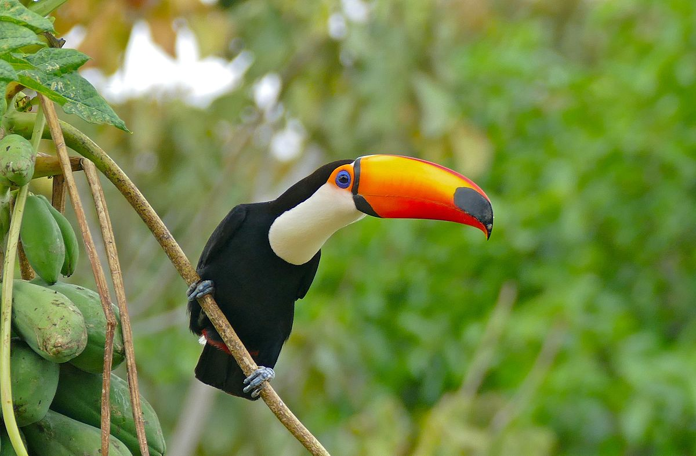

2019-10-30
Katex rendering
This is some inline katex formula $e^x$ followed by a block:
££\int_0^\infty e^{-x}\mathrm{d}x££
And it renders fast! But only in the page itself.

this is a toucan

and this is a pelican
I hope you see the difference !